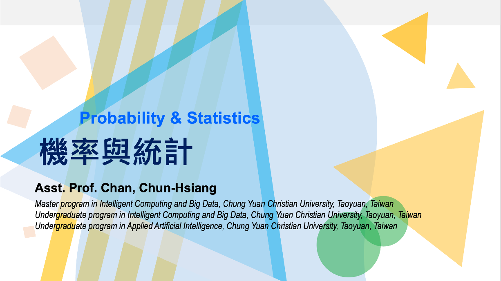

Probability and Statistics @ CYCU
Course Content
Everything surrounding us can be expressed by probability, and statistics are used to compare one thing to another. This course will cover combinatorial analysis, axiom, conditional probability, distribution, random variable, expectations, and variances. To enhance the memory and learning curve, we have mathematical assignments and programming homework.
Course Intro.
 01 :: Course IntroductionContents: (1) Course intro. (2) Grading policy (3) What is the probabilities (4) What is the statistics (5) Why you need to take this course? (6) What you will learn from this course?
Combinatorial Analysis (I)
02 :: Combinatorial Analysis (I)Contents: (1) Review (2) Introduction (3) Counting principle (4) Permutations (5) Combinations
Combinatorial Analysis (II)
03 :: Combinatorial Analysis (II)Content: (1) Review (2) Multinominal coefficient (3) The number of integer solutions of equations
Axioms of Probability (I)
04 :: Axioms of Probability (I)Content: (1) Introduction (2) Sample space and events (3) Axioms of probabilities (4) Some simple propositions
Axioms of Probability (II)
05 :: Axioms of Probability (II)Content: (1) Sample Spaces Having Equally Likely Outcomes (2) Probability as a Continuous Set Function (3) Probability as a Measure of Belief
Conditional Probability and Independence (I)
06 :: Conditional Probability and Independence (I)Content: (1) Introduction (2) Conditional probabilities (3) Bayes' formula
Conditional Probability and Independence (II)
08 :: Conditional Probability and Independence (II)Content: (1) Independent events (2) P(.|F) is a probability
Random Variables (I)
09 :: Random Variables (I)Content: (1) Random variables (2) Discrete random variables (3) Expected values (4) Expectation of a function of a random variable (5) Variance (6) The Bernoulli and binomial random variables
Bernoulli Distribution
09-1 :: Bernoulli DistributionContent: (1) Expected value (2) Variance
Binomial Distribution (I)
09-2 :: Binomial Distribution - Expected ValueContent: The expected value of binomial distribution
Binomial Distribution (II)
09-3 :: Binomial Distribution - VarianceContent: The variance of binomial distribution
Random Variables (II)
10 :: Random Variables (II)Content: (1) The poisson random variable (2) Other discrete probability distribution (3) Expected value of sums of random varialbes (4) Expected value of sums of random variables (5) Properties of the cumulative distribution functions
Continuous Random Variables
11 :: Continuous Random VariablesContent: (1) Introduction (2) Expectation and variance of Continuous random variables (3) The uniform random variables (4) Normal random variables (5) Exponential random variables (6) The Distribution of a Function of a Random Variable
Jointly Distributed Random Variables (I)
12 :: Jointly Distributed Random Variables (I)Content: (1) Joint distribution functions (2) Independent random variables
Jointly Distributed Random Variables (II)
13 :: Jointly Distributed Random Variables (II)Content: (1) Sums of independent random variables (2) Conditional distribution: discrete case (3) Conditional distribution: continuous case (4) Order statistics (5) Joint probability distribution of Functions of random variables
Properties of Expectation (I)
14 :: Properties of Expectation (I)Content: (1) Introduction (2) Expectation of sums of random variables (3) Moments of the number of events that occur (4) Covariance, variance of sums, and correlations
Limit Theorems (I)
15 :: Limit Theorems (I)Content: (1) Introduction (2) Chebyshev’s inequality and the weak law of large numbers (3) The central limit theorem (4) The strong law of large numbers